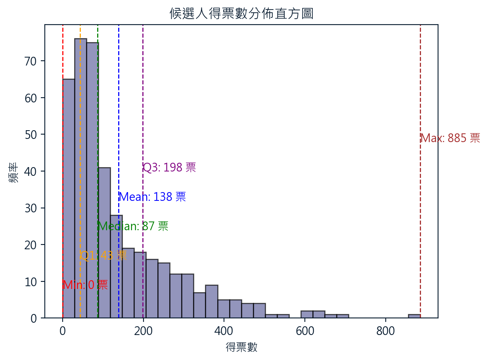

標題一
這是第一段文字。
標題二
這是第二段文字。
圖片集
第四選區所有票倉
2022年，新竹市北區第四選區之議員選舉，總投票數為58242。各里大小不一，為了具體了解各個里的規模，故而提供各里投票規模之資訊如下:
2018 vs 2022 各里里長資訊
吳旭豐
除了中興、中山、北門、長和，舊港、古賢里外，其餘里皆有中位數、平均以上的水準；大多數的里都有第三四分位數以上的水準。
劉康彥
2
楊玲宜
3
林彥甫
黃美慧
蕭志潔
孫鍚洲
彭昆耀
鄭慶欽
吊車尾選上的鄭候選人，在舊社、新雅、金竹與金華里皆有第三四分位數以上的水準。
金雅、湳中、磐石，皆有平均數以上的水準。
蔡文盛
在金竹、舊社與湳中里有第三四分位數以上的水準。
平均數以上: 金雅、金華里。
中位數以上: 湳雅、民富、境福、海濱、光華。
其餘中位數以下。
陳清全
在磐石、文雅、新雅里有第三四分位數以上的水準。
平均數以上: 境福里
中位數以上: 民富、中寮、長和、福林、金竹、舊社
其餘中位數以下。
顏政德
曾泰程
在金華里、舊社里有第三四分位數以上的水準。除了金竹、湳中里外，大部分的得票水準落在中位數以下。